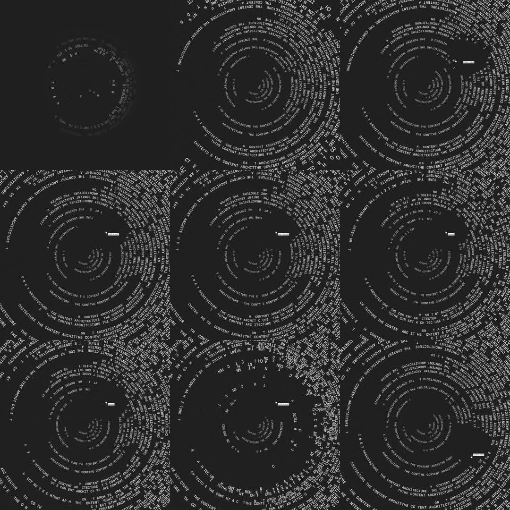

Ringwriter: black canvas filled with concentric rings of tiny monospace text ('THE CONTENT ARCHITECTURE...' repeated), each ring rotating at its own speed like vinyl grooves - kinetic typographic artwork.
Media
Frame-by-frame

0-100%
Dense concentric text rings around a center point; characters set along circular paths, size and tracking vary per ring; rings rotate continuously at different angular velocities (inner faster, outer slower), creating a moire of moving type. A small white cursor dash sits at one ring. Ambient infinite loop, occasional density pulses as rings phase-align.
Build prompt
Rebuild this interaction 1:1: "Ringwriter" - a black canvas filled with concentric rings of tiny monospace text ("THE CONTENT ARCHITECTURE..." repeated), each ring rotating at its own speed like vinyl grooves. Kinetic typographic artwork.
## Integration
Integration: stack-agnostic spec - springs given as stiffness/damping, timed motions as duration + curve, canvas/shader notes are perf guidance only; map every value to your framework and animation library of choice.
## Scene
Black square canvas. Dense concentric rings of mono type around a shared center; ring radius steps outward evenly; character size and tracking vary per ring (outer rings slightly larger). All type white, opacity varying subtly per ring. A small white cursor dash sits on one ring.
## Motion spec
Pattern: ambient infinite rotation.
- Each ring rotates continuously at its own angular velocity: inner rings faster (~20s/rev), outer rings slower (~60s/rev), linear easing - constant speed, never accelerating.
- Rings phase-align occasionally, producing brief density pulses (moire of moving type) - emergent, not scripted.
- The cursor dash rides its ring, or holds angle while its ring turns beneath it (pick one and keep it consistent).
## Calibration
- Speeds in the 20-60s/rev band: this is a contemplative piece - visible motion only if you stare.
- Linear rotation everywhere; any easing reads as a wobble in the grooves.
- Per-ring font size/opacity variation is what creates depth; uniform rings look like a target.
## Reduced motion
All rings freeze in a pleasing phase offset; static artwork.
## Don't miss
- Text follows circular paths glyph by glyph (or textPath) - never straight text rotated as a block.
- Inner-faster / outer-slower differential is the vinyl feel.
- Monospace type is load-bearing; proportional fonts break the groove rhythm.
Mechanics
trigger
autoplay ambient
elements
N concentric text rings, per-ring rotation
properties
ring rotation angle, character placement along circle, font size/opacity per ring
timing
continuous rotation 20-60s/rev per ring (inner faster)